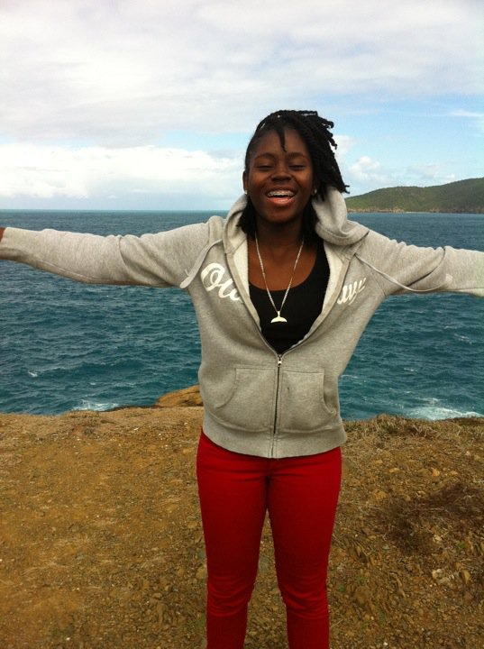

Ever since the fifth grade, I have considered the fields of computer science and game design to be my calling. Back then, a group of friends and I created the “Game Fools,” an idea spurred by the Nintendo game company, also known as the “Game Freaks.” From this small but extremely influential group, poignant characters such as our self-creation “Vector” the alien and a team tune that went along to the “Teen Titans” cartoon theme song were created. Since then, the fire in my heart that keeps my dreams of becoming a professional in the field of computing has never subsided. Comparable to the positive-feedback effects evident in circumstances such as global warming, this fire within me grows with time.
My interests now focus more on the human-centered part of computer science, user experiences, user experience design, and human-computer interactions. Understanding users’ tastes and preferences, using creative interface designs to improve the usability and safety of technologies, evaluating the cognitive activities of users, and helping users bridge the gulfs of execution and evaluation that they continuously experience, are areas about which I am passionate.
Prior to pursuing my Masters degree in Human-Computer Interaction at Georgia Institute of Technology, I pursued a Bachelor of Science in Computer Science in Engineering (CSE) and minor in Philosophy at Lehigh University.
Aside from academics, I enjoy social events with my peers and I love to laugh. I also enjoy spending time with family, painting, taking pictures of views, and writing poetry and rhymes.